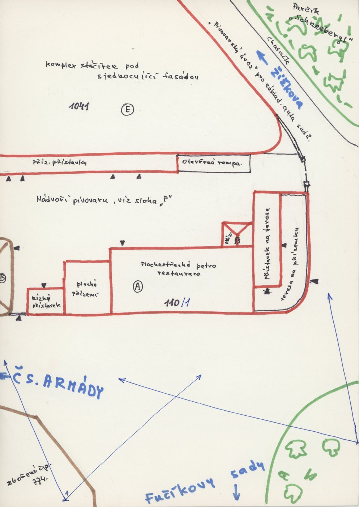
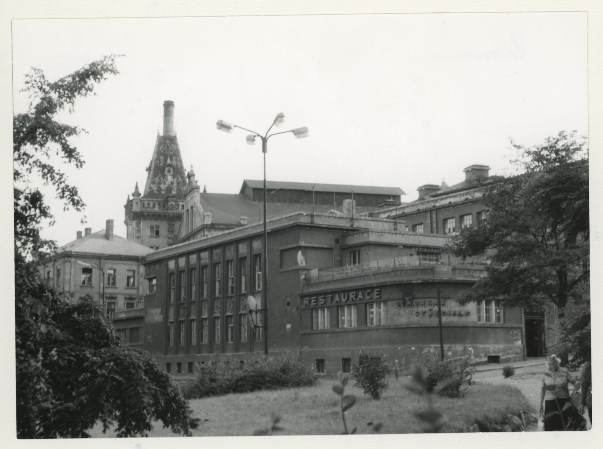
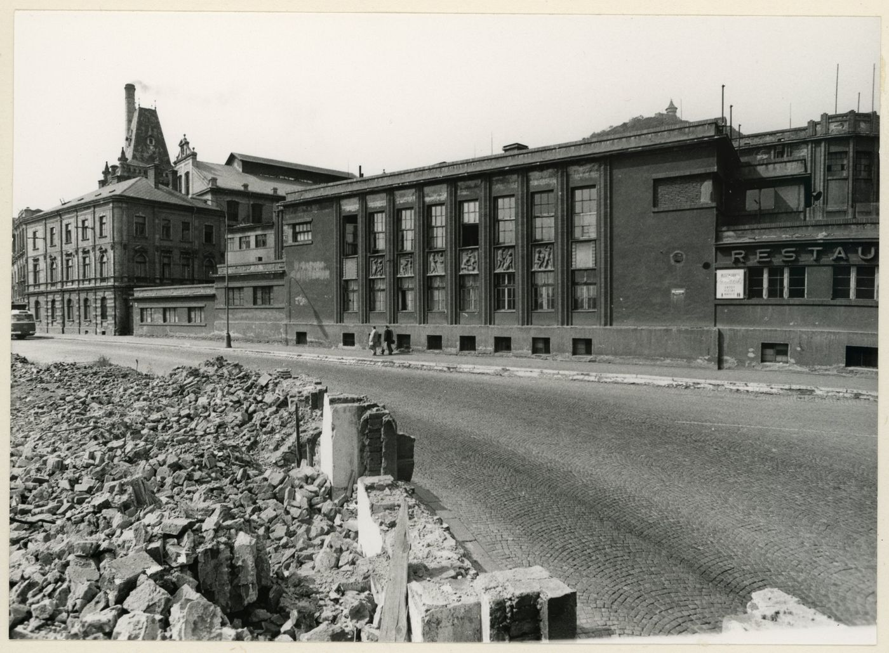
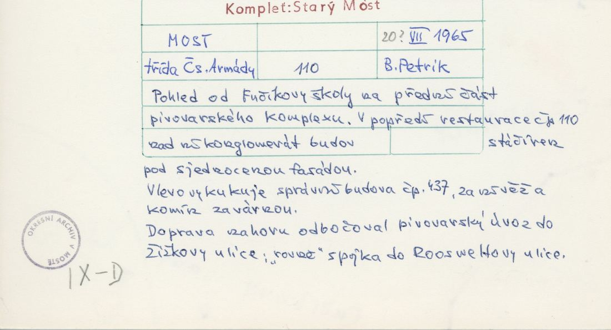
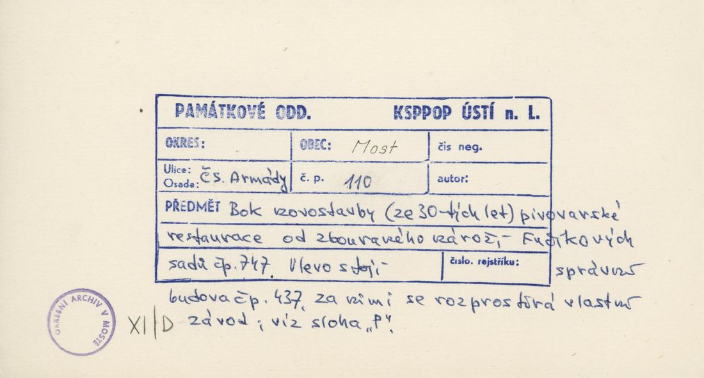
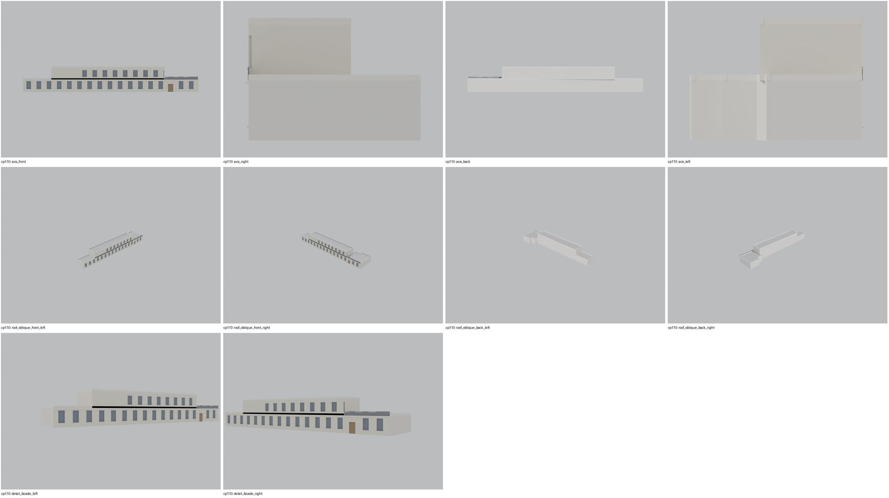

Identita domu
Plochostřechý dvoupodlažní objekt restaurace pivovaru s terasou na přízemní části (nápis RESTAURACE), navazující na dlouhou halu stáčírny 1041. Plán cp_110_001: „Plochostřeché patro restaurace“, „terasa na přízemku“, „nízký přístavek“, „ploché přízemí“; nároží k Žižkově (parčík Schneebergl).
Použité prameny: cp_110_001 PLANE (situace 110 + 1041 + zbořené 774 naproti); cp_110_001 PHOTO (restaurace od Fučíkových sadů, pivovar s věží v pozadí); cp_110_002 PHOTO (ulice: dlouhá plochostřechá stáčírna s vysokými okny, RESTAU… vpravo); FOTO-000150 (kolorovaná pohlednice pivovaru, sdílená s 437/1041).
GIS: GIS id 1515 (536 m², 62 vrcholů, zaoblené rohy) – dlouhý pás podél ulice. V oblasti „Cs_Armady“ je dům veden podruhé se stejnými přílohami.
Prameny (6 příloh)
Všechny přílohy domu v databázi Libuše, každá otevřená a zapsaná v plan_search.json. Stav rešerše plánů: found; situační/střešní náčrt (ruční, nekótovaný, PLANE,BW) – není stavební výkres; půdorysné rozměry z GIS nebo odhad. Kliknutím otevřete větší náhled.


situační náčrt
SHA-256 eebecf08c3d4…

fotografie
SHA-256 6e26ed1120db…


fotografie
SHA-256 59cac59b09a1…


fotografie
SHA-256 fca731f84413…


archivní karta (rub) · výřez textu
SHA-256 e4051b1837cb…


archivní karta (rub) · výřez textu
SHA-256 3e08e24b51b1…
Model
| Revize modelu | r2 (zachované revize: r1, r2) |
|---|---|
| Poloha | GIS půdorys id 1515 |
| Šířka průčelí | 62,20 m |
| Výška okapu | 4,40 m (odhad) |
| Podlaží | 2 |
| Střecha podle pramenů | plochá |
| Střecha v modelu | plochá s atikou |
| Otvory | 28 |
| Vikýře / vedlejší hmoty | 0 / 1 |
| Polygonů | 421 |
Zdroje rozměrů, jak jsou zapsány v plánu modelu
| Rozměry | GIS id 1515 strip 62 x 7-12.6 m (front jogs <1.6 m dropped) |
|---|---|
| Průčelí | photos cp_110_001/002: flat-roofed 2-storey restaurant block with tall ground-floor windows, 1-storey ends; sketch cp_110_001 (A = restaurant floor, terrace at the NE end) |
| Střecha | flat (sketch/photo) |
Kontrola: 10 povinných pohledů

Nálezy
- plochostřechý pás 62 m s patrem restaurace (x 10–50), atiky, terasové zábradlí na SV konci, 16 vysokých oken + dveře; dle foto cp_110_002 (schematicky)
- r2 list znovu otevřen: beze změn proti r1 kromě uvedených oprav (1041: axis_right nyní zvenku)
Opravy
- bez oprav
Hypotézy
Vše níže je model_hypothesis, provisional, locked: false.
- výšky podlaží odhad (přízemí 4,2 m, patro 3,8 m)
- rozsah patra restaurace nad půdorysem odhad podle plánu A (SV část)
- okna odvozena z foto, počet os odhad
- restaurant upper floor extent x 10-50 m (sketch proportion)
- terrace railing at the NE end
- window spacing 3.6 m
- all storey heights, opening sizes and roof pitches are estimates from photographs (model_hypothesis, provisional, locked=false)
Soubory
- Model čp. 110, GLB
- Pracovní složka: F:\MOST\output\zatecka_street_claude_2026-10-17\houses\cp110\
plan_search.json,geometry_plan.json,README.md,texture_handoff_spec.json,r2/cp_110_G_r2.blend,r2/qa/qa_review.json